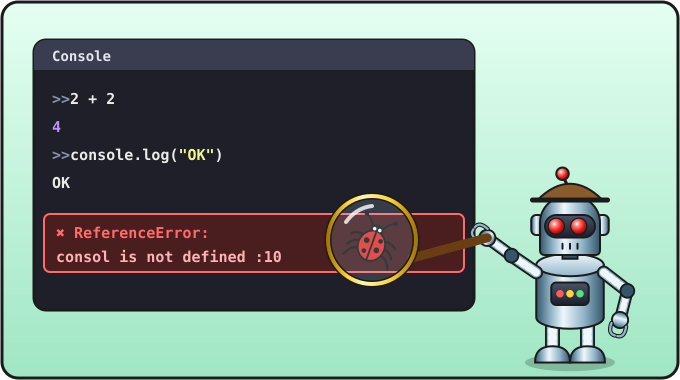

Lesson 2 of 16 ⏱ 40 minutes
The console and errors
Every programmer has a secret window where the program writes messages — the console. It's also where the computer tells you about errors. Today we'll make friends with it and stop being afraid of red messages.
- open the browser console;
- learn to print text and numbers to it with
console.log; - turn the computer into a calculator;
- break the program on purpose and learn to read errors.
| 5 min | Recap of lesson 1: open test.html |
| 10 min | The console and console.log |
| 10 min | Numbers and arithmetic |
| 15 min | Break it and fix it: reading errors |

Opening the console
- Open your file
test.htmlin Geany: File → Open (Ctrl + O) → the code folder. Even easier: File → Recent Files. - Open the same file in the browser, like in the last lesson.
- In the browser press F12. A panel with developer tools appears on the right or at the bottom.
- At the top of the panel choose the Console tab.
Writing to the console
The alert window gets in the way: nothing happens until you click OK. That's why programmers write messages to the console with the command console.log (log means "write in the logbook"). Replace the line with alert with these:
<!DOCTYPE html>
<html>
<head>
<meta charset="utf-8">
<title>Test</title>
</head>
<body>
<h1>My first program</h1>
<script>
console.log("Hello from the console!");
console.log("I can count:");
console.log(2 + 2);
</script>
</body>
</html>
The new lines are marked in green. Save (Ctrl + S) and refresh the page (F5). Nothing new appears on the page itself, but the console shows:
Hello from the console! I can count: 4
Look closely at console.log: there's a dot between console and log. It means "console, write this down!".
The calculator computer
Computers are great at maths. Here are the operation signs:
| Sign | Operation | Example | Answer |
|---|---|---|---|
+ | add | 7 + 5 | 12 |
- | subtract | 7 - 5 | 2 |
* | multiply (asterisk!) | 7 * 5 | 35 |
/ | divide (slash) | 10 / 4 | 2.5 |
Decimal numbers in programming are written with a dot: 2.5.
Try the difference between a number and text. Add this to the program:
console.log(2 + 2);
console.log("2 + 2");
The first line prints 4, the second prints 2 + 2. The computer doesn't calculate anything in quotes — it just shows it as it is. Programmers call text in quotes a string.
>> sign, type 7 * 8 and press Enter. The answer appears straight away. It's a handy way to try out small bits of code.
Break it and fix it
All programmers make mistakes, even the most experienced ones, many times a day. The main thing is learning to find them. Let's make a mistake on purpose.
Error 1: a typo in a command
Remove the letter e from one of the commands, so you get consol.log("Hello from the console!");. Save and refresh the page. A red message appears in the console:
❌ Uncaught ReferenceError: consol is not defined test.html:10:5
Let's translate:
- ReferenceError: consol is not defined — "Error: I don't know what
consolis." - test.html:10:5 — the error is in the file
test.htmlon line 10 (and 5 is the character number in that line). Look at the line numbers in Geany: the typo is right there on line ten!
Fix the typo, save and refresh: the error is gone.
Error 2: a missing quote
Delete the closing quote: console.log("Hello from the console!);
❌ Uncaught SyntaxError: "" string literal contains an unescaped line break
SyntaxError means "a writing mistake", like a grammar mistake in a sentence. The computer is saying: "the text in quotes didn't end before the end of the line" — it couldn't tell where the text finishes.
Error 3: a missing bracket
Delete the closing bracket: console.log("Hello from the console!";
❌ Uncaught SyntaxError: missing ) after argument list
Here the computer says it straight out: missing ) — "a bracket ) is missing".
| If you see… | It means… | Check |
|---|---|---|
… is not defined | "I don't know that word" | typos, capital and small letters, quotes around text |
SyntaxError | "I can't read this, it's written wrong" | matching brackets and quotes |
string literal contains an unescaped line break | "the text in quotes isn't closed" | the closing quote |
missing ) | "a bracket is missing" | every ( needs its own ) |
expected …, got …unexpected token | "I expected one thing and found another" — an extra or odd symbol | the line named in the error and the line before it |
alert(Hello); without quotes also gave an error: Hello is not defined. Without quotes the computer thinks Hello is the name of something it should know. With quotes it understands it's just text.
test.html, and later snake.html.
- How many minutes are there in a day? Print
24 * 60to the console. - How many seconds are there in a day? (Hint: you can multiply three numbers.)
- Write
console.log(10 - 3 * 2);andconsole.log((10 - 3) * 2);. Why are the answers different? (Just like in maths: brackets first, then multiplication.) - Ask a friend or a grown-up to make one mistake in your code while you're not looking. Find it using the message in the console!
- ⭐ What does
console.log("2" + "2");print? Guess why.
Check yourself
- I can open the console (F12).
- I know the difference between
2 + 2and"2 + 2". - I can use an error message to find the right line in Geany.